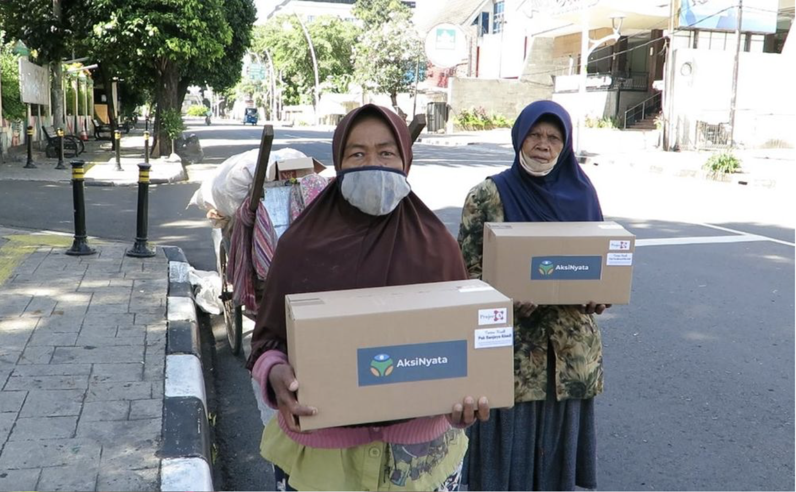
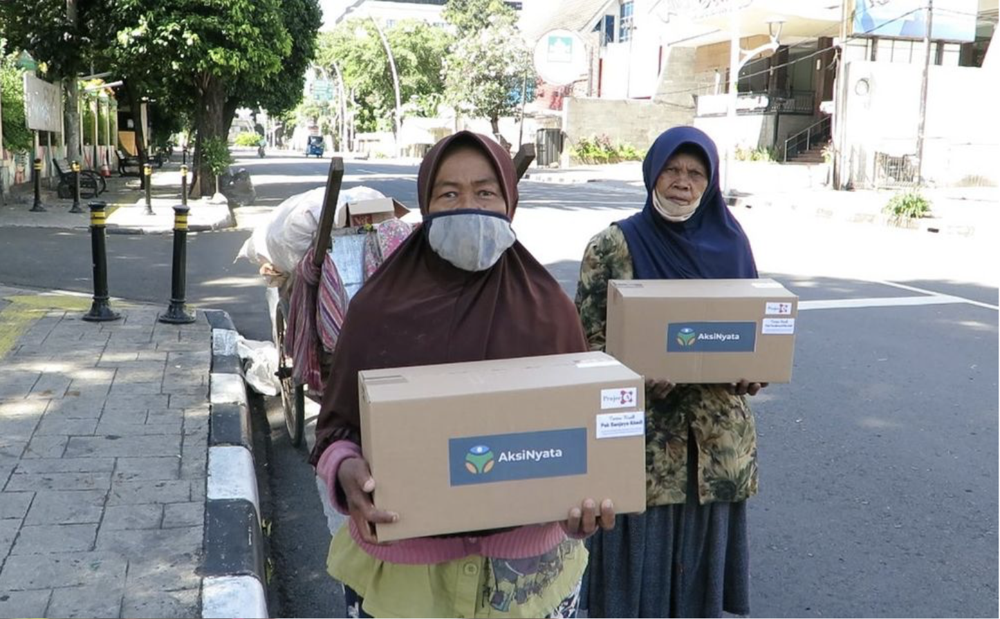

Aksinyata, an organization started by my brother and myself, was created amidst the challenging times of the COVID-19 pandemic, which significantly impacted lives across Indonesia. This initiative was particularly focused on the scavengers, a group that are often overlooked yet pivotal in our society. These individuals tirelessly collect recyclable materials like plastic, aluminum foils, and cardboards. However, with the closure of recycling factories during the pandemic, their livelihoods were severely disrupted, leaving them without a source of income.
Driven by a deep sense of responsibility towards our South Jakarta community, we launched the "Support the Forgotten" campaign. This campaign aimed not only to provide immediate aid but also to elevate societal awareness about the crucial role the scavengers play in environmental conservation and community wellbeing.
We have successfully accomplished the distribution of more than 400 boxes or sembako to 600 families in the South Jakarta region. These boxes were thoughtfully packed with essential daily items to support the well-being of the community. Contents included staples such as rice, cooking oil, dried fish and shrimp, eggs, instant noodles for quick meals, flour, essential condiments like salt and sugar, flavorful soy sauce, and household necessities including detergent, bathing soap, and dish soap. This comprehensive selection was designed to cater to both the nutritional and hygiene needs of the families during these challenging times.


Our campaign has garnered uplifting and enthusiastic support, significantly amplified through our dedicated social media platforms and influencers. Their commitment to spreading our message played a pivotal role in our success, providing us the ability to raise over $5000 through the esteemed donation platform, KitaBisa. These generous contributions have been the key to our ability to distribute these essential boxes, thereby making a difference in the lives of those we serve. This collective effort underscores the power of community and social media in driving positive social change.

 
